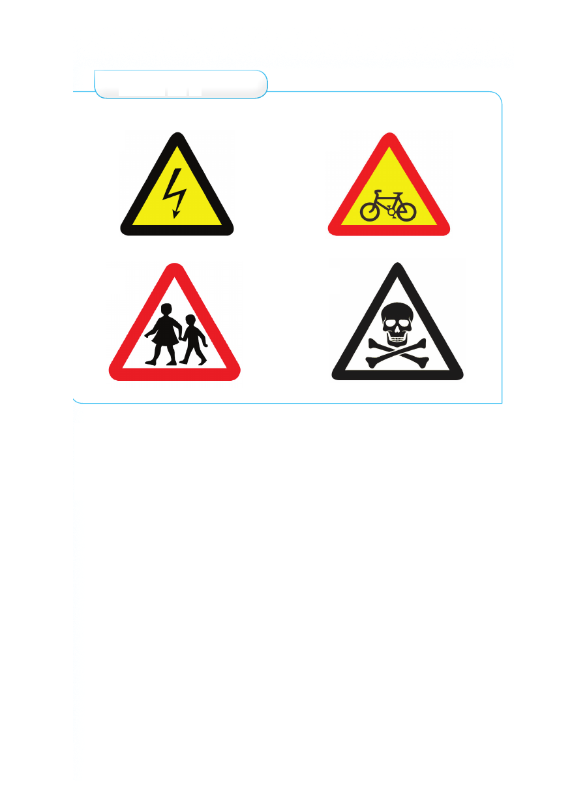

Zoezi la 4
Tazama alama zifuatazo, andika maana ya kila alama
1. 2.
3. 4.
Katika mazingira tunayoishi kuna viumbe hai mbalimbali.
Viumbe hao ni kama vile paka, mbuzi, ng'ombe na miti. Katika
sura ya tano utajifunza kuhusu viumbe hai wanaopatikana
katika mazingira yetu.
Zoezi la 4 Tazama alama zifuatazo, andika maana ya kila alama 1. 2. 3. 4. Katika mazingira tunayoishi kuna viumbe hai mbalimbali. Viumbe hao ni kama vile paka, mbuzi, ng'ombe na miti. Katika sura ya tano utajifunza kuhusu viumbe hai wanaopatikana katika mazingira yetu.